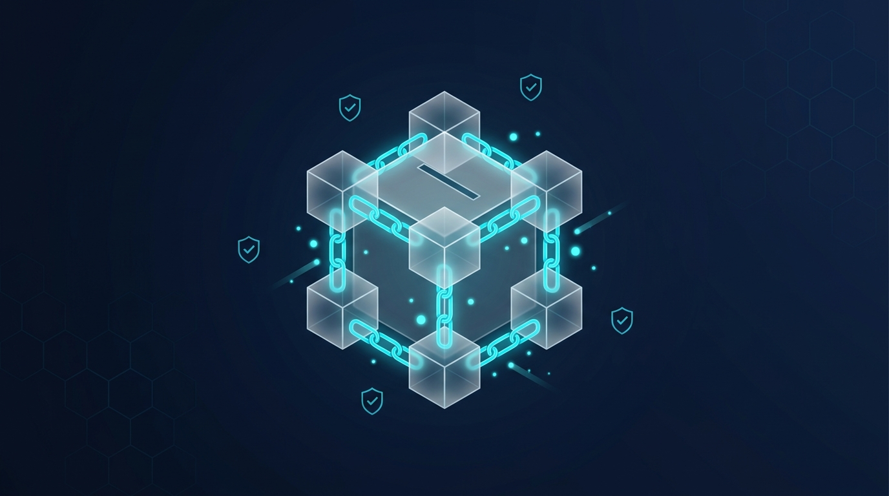
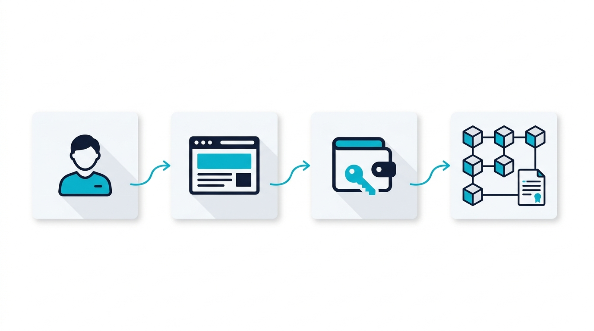

Scrutin étudiant inviolable, auditable
et sans tiers de confiance
Smart Contract Solidity 0.8.24 · Ethers.js v6 · MetaMask · React 18 & Vite
Hardhat Node & Ethereum Sepolia Testnet

Trois défis fondamentaux de confiance auxquels toute élection universitaire fait face.
Restreindre l'accès aux seuls étudiants inscrits à l'ENET'Com tout en dissociant l'identité civile de l'adresse publique Ethereum.
Garantir mathématiquement l'unicité du suffrage via un verrouillage booléen on-chain irréversible (hasVoted[msg.sender] = true).
Permettre un audit public sur Etherscan tout en scellant les tendances jusqu'à la clôture officielle par le président de séance.
Même objectif démocratique. Un niveau de garantie radicalement différent.
root peut modifier la table des suffrages sans trace.Un registre décentralisé infalsifiable au lieu d'une base de données propriétaire.
Le registre d'émargement est répliqué sur des milliers de nœuds Ethereum indépendants. Aucun Single Point of Failure ne peut interrompre le scrutin.
Chaque suffrage est scellé dans un bloc lié au précédent par son empreinte cryptographique. Modifier un vote invaliderait toute la chaîne.
Le règlement électoral est compilé en bytecode Solidity 0.8.24 et exécuté par l'Ethereum Virtual Machine. Les règles s'appliquent sans intervention humaine.
Déploiement concret d'une infrastructure de vote pour l'Université de Sfax.
Chaîne de confiance de bout en bout — aucun serveur intermédiaire ne touche au bulletin.

Point clé pour le jury : Le navigateur dialogue directement avec le nœud Ethereum via Ethers.js v6. Le vote ne transite par aucun serveur propriétaire.
Le code Solidity 0.8.24 transforme le règlement électoral en logique mathématique immuable.
Modifier onlyAdmin + mapping(address ⇒ bool) isAuthorized avec inscription en lot via authorizeVoters().
require(!hasVoted[msg.sender]) puis verrouillage irréversible hasVoted[msg.sender] = true.
enum VotingState { NotStarted, Open, Closed } — interdit tout vote ou dépouillement prématuré.
startVoting()vote(uint256 candidateId)closeVoting()getResults() & getWinner()VoteCast · VoterAuthorized · VotingClosedSix composants professionnels éprouvés, chacun avec une responsabilité ciblée.
Interface réactive avec isoloir numérique, modale de scellement cryptographique, jauge de quorum et design glassmorphic ENET'Com.
Smart Contract compilé avec optimiseur (200 runs), gestion d'erreurs natives et protection anti-reentrancy intégrée.
Bibliothèque Web3 pour l'encodage ABI, la communication JSON-RPC et l'écoute des événements on-chain en temps réel.
Gestionnaire de clés privées, signature sécurisée ECDSA secp256k1 côté client sans exposition de la clé.
Nœud local EVM (Chain 31337), scripts de déploiement automatisés et suite d'audit de 25 tests unitaires Chai.
Blockchain publique Ethereum (Chain 11155111), confirmations réelles (~12s/bloc), audit via Etherscan.
De l'authentification de l'étudiant à la preuve infalsifiable sur la blockchain.
@enetcom.u-sfax.tn + présence whitelist.vote() sur l'EVM, minage du bloc, validation du nonce.VoteCast, mise à jour quorum et reçu.Quatre scénarios d'audit critiques pour prouver la résilience devant le jury.
Électeur autorisé votant pour Mouheb Jouili. Transaction minée, compteur incrémenté, reçu affiché.
Tentative de revoter avec la même adresse. Bouton verrouillé, revert formel du Smart Contract.
Onglet Dépouillement pendant le vote : message de scellement strict, zéro fuite des scores partiels.
Admin clôture, vainqueur proclamé, jauge quorum validée et Procès-Verbal officiel imprimable.
Analyse critique d'ingénieur : ce que la blockchain résout et ce qui reste à couvrir.
Feuille de route vers une mise en production institutionnelle à grande échelle.
Avez-vous des questions ?